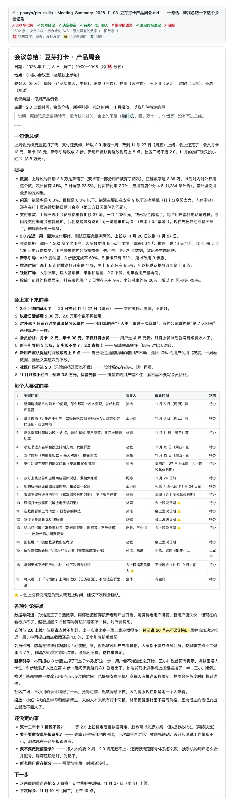
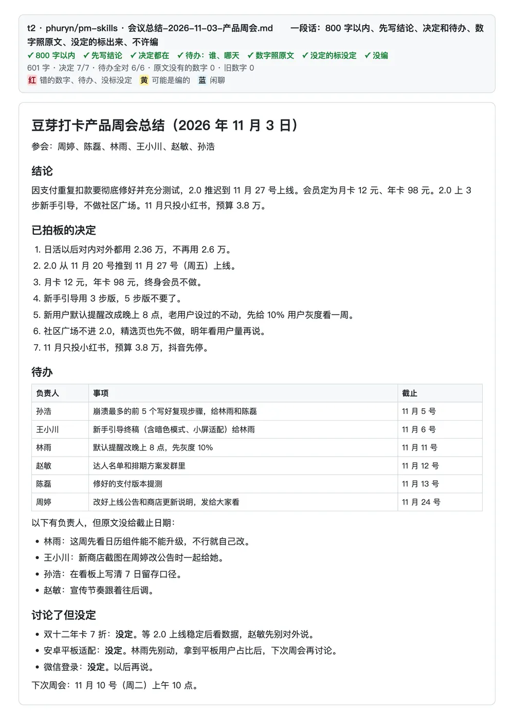

phuryn/pm-skills: meeting summary test
Test of 2026-11-08. Installed from its README in a throwaway sandbox, then used by Claude Code (Claude Opus 5.5) to summarise the same made-up meeting record, an automatic transcript of a product team's weekly meeting of about 5,000 字, from two requests in the person's words. Whenever the build stopped short of a finished summary, it got the same reply. A separate tester session, with no tool loaded, checked the summary against 7 checks fixed before the runs: six scripted against an answer key written with the record, and one, anything the record does not support, read by the tester sentence by sentence. Everything in the record is made up. All results · The meeting record · The checklist · The answer key
Install: pm-execution@pm-skills plugin (v2.2.0, user scope) via `claude plugin marketplace add phuryn/pm-skills` then `claude plugin install pm-execution@pm-skills` (repo commit 2a12295a7717)
Why it was in the test (our note before the run): 最多星的「会议逐字稿 → 结构化纪要」专用 skill：模板固定写决定、待办表（截止日期 / 负责人 / 事项）、未决问题。值得看：它的第 1 步说缺背景就上网搜，第 5 步要求「写给小学毕业生看」。
One line
The request, word for word: 「帮我总结一下这个会议记录。」
4 of 7 checks passed. 2,632 字, in Meeting-Summary-2026-11-03-豆芽打卡产品周会.md. Built in 1.1 minutes; it stopped to ask 0 time(s); how it ended: finished. Usage at API prices: $0.35 (1.5 times the run with no tool on this request).
| Check | Verdict | What decided it |
|---|---|---|
| At most 800 字 | fail | 2632 字（上限 800） |
| Opens with what was decided | pass | 开头 150 字里写到 6 条决定（D1、D2、D4、D5、D6、D7）；开头：上周会员续费重复扣了钱，支付还要修，所以 2.0 推迟一周，改到 11 月 27 日（周五）上线；会上还定了：会员月卡 12 元、年卡 98 元，新手引导改成 3 步，新用户默认提醒改到晚上 8 点，社区广场不进 2.0，11 月的推广钱… |
| All 7 decisions | pass | 7/7 条决定写到了 |
| All 6 tasks, each with its owner and due date | pass | 6/6 条待办负责人和截止日期都对 |
| Every figure as the record says it | fail | 112 个数字，1 个原文里没有（「16」：…10:00–10:16（约 16 分钟） **地点**：3 …）；旧数字当成现在的 0 处 |
| The 3 open points marked not decided | pass | 3/3 件没定的事写到并标了没定 |
| Nothing the record does not support (the tester) | fail | 4 statement(s) the record does not support, listed below |
What the tester found the record does not support
10 | 压缩打卡分享图（解决老手机闪退） | 林雨 | 会上没说日期 ⚠️ | 待办
Nobody was given this. 陈磊 noted the share image is too big, and 林雨 only said 「分享图确实大，压一压应该就好了，这个不难」. No owner was named, so 林雨 as owner is the summary's own addition.8 | 新的应用商店截图交给周婷，和公告一起用 | 王小川 | 和第 7 项一起（11 月 24 日前） | 待办
王小川 only said 「截图我手上有一版新的，改公告的时候一起给你，婷姐」. The record gives this no date. The summary took 11 月 24 日, the deadline of 周婷's announcement task, and put it on this loose ask.6 | 支付功能完整回归测试两轮（安卓和 iOS 都测） | 孙浩 | 提测后，27 日上线前（会上没说具体日期） | 待办
孙浩 said 「我这边支付至少要完整回归两轮，安卓和 iOS 都要过」 but gave no deadline, and none was set for him. The window 「提测后，27 日上线前」 is worked out by the summary, even though it adds that no exact date was given.大家都不赞成终身会员。
Only 周婷 (「终身会员我不想做」) and 陈磊 (「同意，终身会员后面全是坑」) spoke against it. 林雨 only raised the question, and 王小川, 赵敏 and 孙浩 said nothing about it. The summary gives the opinion to people who did not state it.
Small talk it kept: 咖啡机
Where the tester doubted how the script read it
Some of these led to the script fixes listed in RESULTS.md; every verdict on this page comes from the fixed script.
- Every figure as the record says it: Two of the three hits look like misreads. 「4.6」: the record says 「应用商店评分还是 4.6 分」, so the figure is the record's own. The summary only dropped the unit 分. 「20 号」: in 「孙浩说 20 号来不及测完。」 the old date is reported as what was said, not given as the launch date; the same paragraph goes on 「周婷当场决定推迟一周」, and the summary everywhere gives 11 月 27 日 as the launch date. 「约 16 分钟」 is a real hit: it is worked out from 10:00–10:16, and the record never states a duration. So the FAIL stands even if the other two hits are dropped.
- The 3 open points marked not decided: Row 14 says 「我们在考虑」, which tells the reader the point is still open. The script's marks include 考虑中 but not 在考虑. Also, the row is the loose ask to reply to users (it is not a statement that WeChat login was decided), and it does not present the point as decided. A reviewer may judge 「在考虑」 to be a not-decided mark.
The tester's notes
The summary is in Chinese Markdown and opens cleanly; the tables render. At about 2,632 字 it is over three times the 800 limit. 「会上定下来的事」 lists 8 items: the 7 decisions plus 「以后日活都用 2.36 万」 and the 7 日留存 wording note. 「每个人要做的事」 puts the 6 real tasks and about 11 loose asks or remarks in one 17-row table, all marked 待办, so the real tasks do not stand out. One smaller wording issue I did not count: 「崩溃主要出在安卓 9 以下的老手机（打卡分享图太大，内存不够）」 states the cause flatly, while 陈磊 said only 「老机型那部分有一些是内存不够」. The filename mixes English and Chinese (Meeting-Summary-…-豆芽打卡产品周会.md). There is no 说明.txt and only one file in output/. Names are spelt correctly.
The summary with the script's marks
The picture shown in our video. Red: a figure the record does not say, an old figure given as current, a task with the wrong owner or date, an open point not marked open. Yellow: lines the script flagged for the tester to read (candidates, not verdicts; the tester's list above is the verdict). Blue: small talk.

The summary as delivered (Meeting-Summary-2026-11-03-豆芽打卡产品周会.md)
# 会议总结：豆芽打卡 · 产品周会 **日期**：2026 年 11 月 3 日（周二）10:00–10:16（约 16 分钟） **地点**：3 楼小会议室（赵敏线上参加） **参会人（6 人）**：周婷（产品负责人，主持）、陈磊（后端）、林雨（客户端）、王小川（设计）、赵敏（运营）、孙浩（测试） **会议类型**：每周产品例会 **主题**：2.0 上线时间、会员价格、新手引导、推送时间、11 月投放，以及几件待定的事 > 说明：原始记录是自动转写、没有校对过的。会上的闲聊（咖啡机、猫、双十一、午饭等）没有写进总结。 --- ## 一句话总结 上周会员续费重复扣了钱，支付还要修，所以 **2.0 推迟一周，改到 11 月 27 日（周五）上线**；会上还定了：会员月卡 12 元、年卡 98 元，新手引导改成 3 步，新用户默认提醒改到晚上 8 点，社区广场不进 2.0，11 月的推广钱只投小红书（3.8 万元）。 ## 概要 - **数据**：上周说的日活 2.6 万是算错了（安卓有一部分用户被算了两次），正确数字是 **2.36 万**，以后对内对外都用这个数。次日留存 41%，7 日留存 23.5%，付费转化率 2.7%，应用商店评分 4.6（1,284 条评价）。差评里说得最多的是闪退。 - **闪退**：崩溃率是 0.8%，目标是 0.3% 以下。崩溃主要出在安卓 9 以下的老手机（打卡分享图太大，内存不够），还有在打卡页连续切换日期时会崩（第三方日历组件的问题）。 - **支付事故**：上周三晚上会员续费重复扣款 37 笔，一共 1,036 元，钱已经全部退了，每个用户都打电话道过歉。原因是支付渠道会重复通知，我们这边没有防止“同一笔请求扣两次”（技术上叫“幂等”）。现在先把自动续费关掉了，彻底修好要一周多。 - **2.0 推迟一周**：因为支付要修，测试还要完整测两轮，上线从 11 月 20 日改到 **11 月 27 日**。 - **会员价格**：调研了 300 多个老用户，大多数觉得 15 元/月太贵（拿来比的「习惯熊」是 10 元/月），年卡 98 元比 128 元更容易接受。用户最想要的会员权益是：去广告、导出打卡数据，然后是主题皮肤。 - **新手引导**：A/B 测试里，3 步版完成率 68%，5 步版只有 52%，所以改用 3 步版。 - **推送时间**：晚上 8 点的推送打开率是 14%，早上 9 点只有 8.5%，所以把默认提醒改到晚上 8 点。 - **社区广场**：人手不够，没人管审核、举报和运营，2.0 不做，明年看用户量再说。 - **投放**：9 月的数据显示，抖音来的用户 7 日留存只有 9%，小红书来的有 26%，所以 11 月只投小红书。 --- ## 会上定下来的事 1. **2.0 上线时间从 11 月 20 日推到 11 月 27 日（周五）** —— 支付要修、要测，不能赶。 2. **以后日活都用 2.36 万**，2.6 万那个数不再使用。 3. **对外说 7 日留存时要说清楚怎么算的** —— 我们算的是“7 天里回来过一次就算”，有的公司算的是“第 7 天回来”，两种算法不一样。 4. **会员价格：月卡 12 元，年卡 98 元，不做终身会员** —— 用户觉得 15 元贵；终身会员以后就没有续费收入了。 5. **新手引导用 3 步版，5 步版不要了，2.0 直接上** —— 完成率高很多（68% 对比 52%）。 6. **新用户默认提醒时间改成晚上 8 点** —— 自己设过提醒时间的老用户不动；先给 10% 的用户试用（灰度）一周看数据；推送文案这次先不改。 7. **社区广场不进 2.0**（只读的精选页也不做）—— 设计稿先存起来，明年再看。 8. **11 月只投小红书，预算 3.8 万元，抖音先停** —— 抖音来的用户留不住；素材里不要写会员价格。 ## 每个人要做的事 | # | 要做的事 | 负责人 | 截止时间 | 状态 | |---|---------|--------|---------|------| | 1 | 整理崩溃最多的前 5 个问题，每个都写上怎么重现，发给林雨和陈磊 | 孙浩 | 11 月 5 日（周四）前 | 待办 | | 2 | 设计终稿（3 步新手引导，含暗色模式和 iPhone SE 这类小屏的适配）交给林雨 | 王小川 | 11 月 6 日（周五）前 | 待办 | | 3 | 默认提醒时间改为晚上 8 点，先给 10% 用户灰度，并盯推送到达率 | 林雨 | 11 月 11 日（周三）前 | 待办 | | 4 | 小红书达人名单和投放排期方案，发到群里 | 赵敏 | 11 月 12 日（周四）前 | 待办 | | 5 | 支付修好（防重复扣款 + 每天对账），提交测试 | 陈磊 | 11 月 13 日（周五）前 | 待办 | | 6 | 支付功能完整回归测试两轮（安卓和 iOS 都测） | 孙浩 | 提测后，27 日上线前（会上没说具体日期） | 待办 | | 7 | 改好上线公告和应用商店更新说明，发给大家看 | 周婷 | 11 月 24 日前 | 待办 | | 8 | 新的应用商店截图交给周婷，和公告一起用 | 王小川 | 和第 7 项一起（11 月 24 日前） | 待办 | | 9 | 看能不能升级日历组件（解决切换日期闪退），不行就自己改 | 林雨 | 本周（会上没说具体日期） | 待办 | | 10 | 压缩打卡分享图（解决老手机闪退） | 林雨 | 会上没说日期 ⚠️ | 待办 | | 11 | 在数据看板上写清楚 7 日留存的算法 | 孙浩 | 会上没说日期 ⚠️ | 待办 | | 12 | 宣传节奏跟着 2.0 往后挪 | 赵敏 | 会上没说日期 ⚠️ | 待办 | | 13 | 给小红书博主准备素材包（新界面截图、图标等，不放价格）—— 赵敏告诉小川要哪些 | 赵敏、王小川 | 会上没说日期 ⚠️ | 待办 | | 14 | 回复用户：微信登录我们在考虑 | 赵敏 | 会上没说日期 | 待办 | | 15 | 留存数据按新用户/老用户分开看（需要陈磊加字段） | 孙浩、陈磊 | 不急，这周可能排不上 | 已记下 | | 16 | 拿到安卓平板用户的占比，供下次周会讨论 | **会上没指定负责人** ⚠️ | 下次周会（11 月 10 日）前 | 待办 | | 17 | 每人看一下「习惯熊」上周的改版（日历视图），有想法在群里说 | 全体 | 有空时 | 待办 | ⚠️ = 会上没有说清楚负责人或截止时间，建议下次周会确认。 ## 各项讨论要点 **数据与闪退**：孙浩更正了日活数字。周婷想把留存按新老用户分开看，她觉得老用户挺稳、新用户流失快，但现在的看板拆不了。赵敏提醒 7 日留存的算法和别家不一样，对外要说明。 **支付与 2.0 上线**：陈磊说支付不能赶，出一次事比晚一周上线麻烦得多；孙浩说 20 号来不及测完。周婷当场决定推迟一周。林雨提出商店截图还是 1.0 的，王小川有新版截图。 **会员价格**：陈磊觉得我们功能比「习惯熊」多，但赵敏说用户先看价格。大家都不赞成终身会员。赵敏想在双十二做年卡 7 折，陈磊担心支付刚出过事、系统还不稳，**这件事没定**。 **新手引导**：林雨担心 3 步版去掉了“选打卡模板”这一步，用户会不知道怎么开始；王小川说首页有提示，测试里没人卡住，5 步版很多人是在第 4 步（选每天提醒几次）就退出了。孙浩发现小屏手机上按钮被挡了一半，王小川会改。 **推送**：陈磊提醒不要改老用户自己设过的时间；也提醒安卓手机厂商每天有推送条数限制，林雨会在灰度时盯着到达率。 **社区广场**：王小川的设计稿做了一半，觉得可惜；赵敏同意不做，因为客服现在都是她一个人兼着。 **投放**：小红书找的是学习和健身博主，来的人本来就有打卡习惯。林雨提醒素材里不要写价格，因为博主的笔记发出去就改不回来了。 ## 还没定的事 - **双十二年卡 7 折做不做？** —— 等 2.0 上线稳定后看数据再定。赵敏可以先想方案，但先别对外说。（周婷决定） - **要不要做安卓平板适配？** —— 先拿到平板用户的占比，下次周会再讨论；林雨先别动。设计和测试工作量都不小，测试现在一台平板都没有。 - **要不要做微信登录？** —— 接入大约要 2 周，2.0 肯定赶不上；还要想清楚账号体系怎么改、换手机的用户怎么合并账号。周婷还没想好，先记下。 - **新老用户留存拆分** —— 需要加字段，时间还没排。 ## 下一步 - 这两周的重点是把 2.0 做稳：支付修好并测完，11 月 27 日（周五）上线。 - **下次周会：11 月 10 日（周二）上午 10 点。**
Where it stopped, and got the reply 「我不懂这些，你按你推荐的来，继续做。」
- It did not stop to ask.
One paragraph
The request, word for word: 「帮我把这个会议记录整理成一份总结，发给没来开会的同事看。全文 800 字以内。第一段先写结论：这次会最后定了什么。然后列出所有拍板的决定，再列出所有待办，每一条写清楚谁负责、哪天之前做完。数字一律照原文写，不要改，也不要自己换算。讨论了但没定下来的事单独列出来，标明“没定”，不能写成已经定了。原文里没有的东西一个字都别编，包括负责人和截止日期。」
7 of 7 checks passed. 601 字, in 会议总结-2026-11-03-产品周会.md. Built in 0.9 minutes; it stopped to ask 0 time(s); how it ended: finished. Usage at API prices: $0.33 (1.2 times the run with no tool on this request).
| Check | Verdict | What decided it |
|---|---|---|
| At most 800 字 | pass | 601 字（上限 800） |
| Opens with what was decided | pass | 开头 150 字里写到 5 条决定（D1、D2、D4、D6、D7）；开头：因支付重复扣款要彻底修好并充分测试，2.0 推迟到 11 月 27 号上线。会员定为月卡 12 元、年卡 98 元。2.0 上 3 步新手引导，不做社区广场。11 月只投小红书，预算 3.8 万。 |
| All 7 decisions | pass | 7/7 条决定写到了 |
| All 6 tasks, each with its owner and due date | pass | 6/6 条待办负责人和截止日期都对 |
| Every figure as the record says it | pass | 39 个数字，0 个原文里没有；旧数字当成现在的 0 处 |
| The 3 open points marked not decided | pass | 3/3 件没定的事写到并标了没定 |
| Nothing the record does not support (the tester) | pass | None found |
What the tester found the record does not support
- Nothing.
The tester's notes
Only one file in output/, a Markdown file. It is in Chinese and laid out cleanly: title, attendees, 结论, 7 numbered decisions, a 6-row 待办 table (负责人/事项/截止) whose Markdown renders correctly, 4 undated loose asks labelled as having no due date in the record, 3 open points each marked **没定**, and the next meeting's date. Names are spelt correctly. Dates are written as '11 月 13 号' rather than '日'. The first decision mentions the replaced figure 2.6 万, but only as '不再用 2.6 万', so it is not given as current. Most of the record's metrics are left out (retention, crash rate, refund amounts): kit found only 2 of 10 key numbers kept. That is an omission, not something the checklist fails.
The summary with the script's marks
The picture shown in our video. Red: a figure the record does not say, an old figure given as current, a task with the wrong owner or date, an open point not marked open. Yellow: lines the script flagged for the tester to read (candidates, not verdicts; the tester's list above is the verdict). Blue: small talk.

The summary as delivered (会议总结-2026-11-03-产品周会.md)
# 豆芽打卡产品周会总结（2026 年 11 月 3 日） 参会：周婷、陈磊、林雨、王小川、赵敏、孙浩 ## 结论 因支付重复扣款要彻底修好并充分测试，2.0 推迟到 11 月 27 号上线。会员定为月卡 12 元、年卡 98 元。2.0 上 3 步新手引导，不做社区广场。11 月只投小红书，预算 3.8 万。 ## 已拍板的决定 1. 日活以后对内对外都用 2.36 万，不再用 2.6 万。 2. 2.0 从 11 月 20 号推到 11 月 27 号（周五）上线。 3. 月卡 12 元，年卡 98 元，终身会员不做。 4. 新手引导用 3 步版，5 步版不要了。 5. 新用户默认提醒改成晚上 8 点，老用户设过的不动，先给 10% 用户灰度看一周。 6. 社区广场不进 2.0，精选页也先不做，明年看用户量再说。 7. 11 月只投小红书，预算 3.8 万，抖音先停。 ## 待办 | 负责人 | 事项 | 截止 | |---|---|---| | 孙浩 | 崩溃最多的前 5 个写好复现步骤，给林雨和陈磊 | 11 月 5 号 | | 王小川 | 新手引导终稿（含暗色模式、小屏适配）给林雨 | 11 月 6 号 | | 林雨 | 默认提醒改晚上 8 点，先灰度 10% | 11 月 11 号 | | 赵敏 | 达人名单和排期方案发群里 | 11 月 12 号 | | 陈磊 | 修好的支付版本提测 | 11 月 13 号 | | 周婷 | 改好上线公告和商店更新说明，发给大家看 | 11 月 24 号 | 以下有负责人，但原文没给截止日期： - 林雨：这周先看日历组件能不能升级，不行就自己改。 - 王小川：新商店截图在周婷改公告时一起给她。 - 孙浩：在看板上写清 7 日留存口径。 - 赵敏：宣传节奏跟着往后调。 ## 讨论了但没定 - 双十二年卡 7 折：**没定**。等 2.0 上线稳定后看数据，赵敏先别对外说。 - 安卓平板适配：**没定**。林雨先别动，拿到平板用户占比后，下次周会再讨论。 - 微信登录：**没定**。以后再说。 下次周会：11 月 10 号（周二）上午 10 点。
Where it stopped, and got the reply 「我不懂这些，你按你推荐的来，继续做。」
- It did not stop to ask.